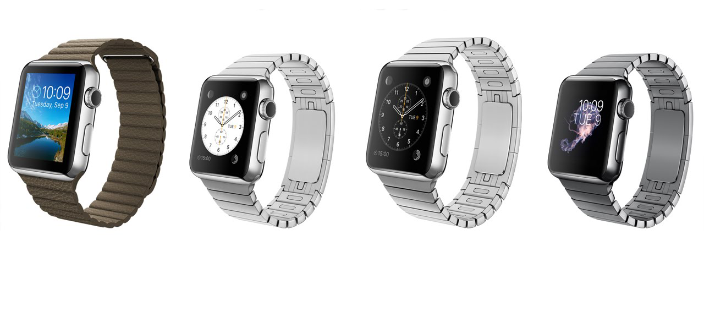

The Watch is here
iPhone 6 Plus isn't just bigger - it's better in every way. A 5.5-inch Retina HD display. An A8 chip with 64-bit desktop-class architecture. A new 8MP iSight camera with Focus Pixels and optical image stabilization. The Touch ID fingerprint identity sensor. Faster LTE and Wi-Fi. Longer battery life. And iOS 8 and iCloud. All in a 7.1mm thin seamless design.
Apple Watch will run a totally new chip, which the company is calling the S1. Apple uses Samsung built ARM-based chips for the iPhone range, and its Korean rival is said to behind the RAM and NAND flash storage, and the assembly itself, for the Apple Watch's System in Package (SiP). Reports have suggested the processor is similar to the A5 silicone used in the iPhone 4S. Wearables are all about sensors, and the Apple Watch has a gyroscope and accelerometer to track your movements, for the health tracking. We've also recently found out that the Watch has 8GB of storage with 2GB set aside for music.
Combined with subtle audio cues from the specially engineered speaker driver, the Taptic Engine creates a discreet, sophisticated, and nuanced experience by engaging more of your senses. It also enables some entirely new, intimate ways for you to communicate with other Apple Watch wearers. You can get someone’s attention with a gentle tap. Or even send something as personal as your heartbeat.
Every new product we’ve introduced has been defined by a unique input device.Digital Crown allows you to navigate nimbly and precisely, without obstructing your view. You can zoom in and out of photos, quickly scroll through lists, input data, or press it like a button to return to the Home screen. The Digital Crown is an integral part of the Apple Watch experience.
| Display | |
| Screen Size | 1.32/1.5 inch |
| Resolution | 272 x 340/312 x 390 pixels |
| Pixel density | 290/302 PPI |
| Processor | |
| Chip | S1 |
| Storage | |
| Storage Type | 8 GB 2 GB for music |
| Conectivity | |
| Wireless | 802.11 b, g, n (2.4 GHz) |
| Bluetooth | 4.0 |
| Battery | |
| Maximum Autonomy | 18h |
| Physical size | |
| Size | 1.52 x 1.31 x 0.41 in |
| Weight | 40 g |
| Height | 1.52 inch |
| Width | 1.31 inch |
| Depth | 0.41 inch |
| Software | |
| Operating system | iOS |
| Multimedia | |
| Speakers | Mono(only for Sport and Edition) |